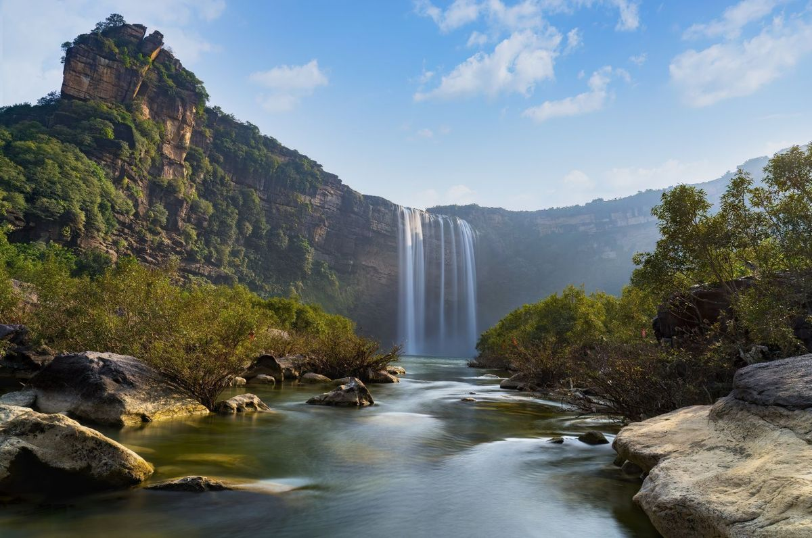

MADHYA PRADESH

Madhya Pradesh, located in central India, is known for its rich history, cultural diversity, and abundant natural beauty.
It boasts of UNESCO World Heritage sites like the Khajuraho temples, renowned for their intricate sculptures depicting life in
medieval India. The state's capital, Bhopal, is famous for its lakes and historical landmarks such as the Taj-ul-Masajid mosque.
Madhya Pradesh is also home to national parks like Kanha and Bandhavgarh, where visitors can spot diverse wildlife including
tigers and leopards. With its blend of heritage, wildlife, and scenic landscapes, Madhya Pradesh offers a unique experience for travelers seeking
both cultural insights and natural wonders.